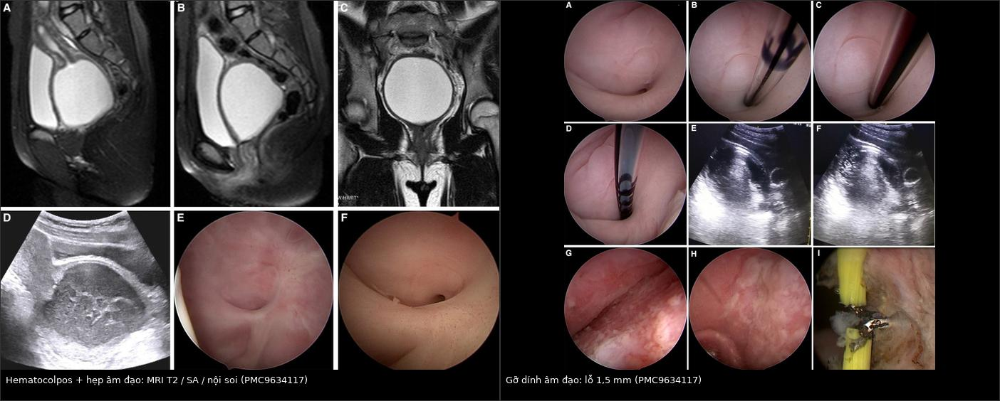
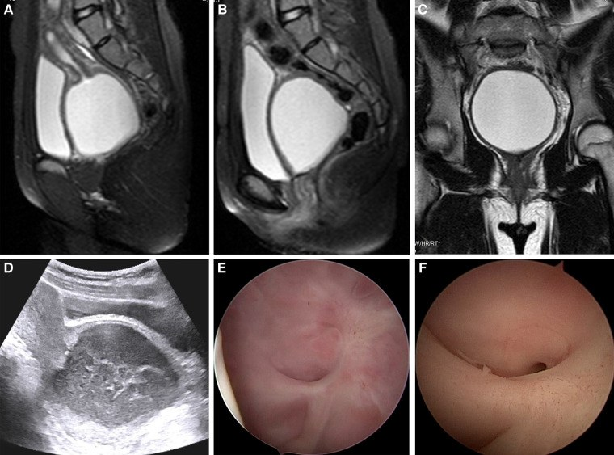
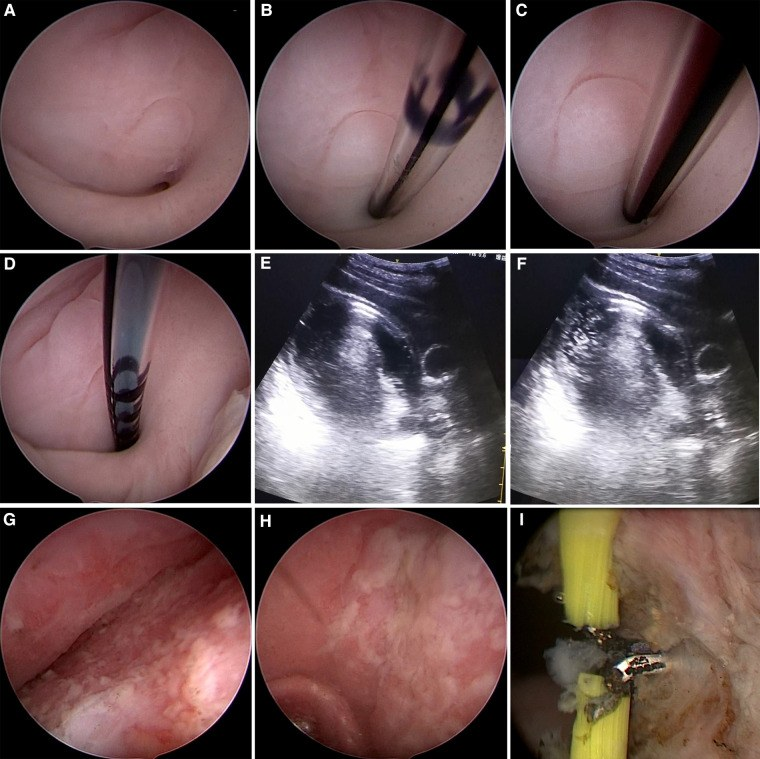
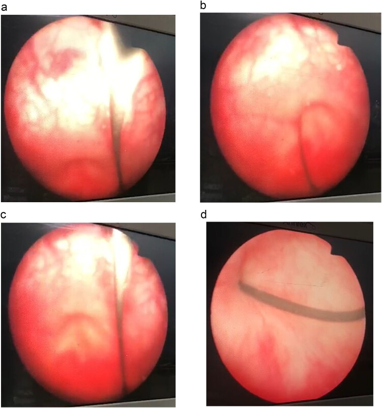

1681 — Di chứng muộn niệu–sinh dục ở bé gái sau chấn thương khung chậu / Late genitourinary sequelae of pelvic trauma in girls
Tags: pattern:hep-am-dao pattern:u-dich pattern:hematocolpos pattern:ro vung:khung-chau vung:sinh-duc-nhi score:AAST-vagina protocol:MRI-chau protocol:VCUG protocol:noi-soi incidentaloma:khong
Mức chắc chắn (certainty): tổng hợp y văn (literature synthesis) — ghép 2 ca nguyên văn có ảnh (bé gái 13 tuổi PMC9634117; bé gái 3 tuổi PMC11751361), 1 loạt 25 ca người lớn (PMC6806549) làm mốc tự nhiên học và số liệu dịch tễ từ các nguồn ghi ở sources.md. Không suy diễn ngoài nguồn.
1. Tổng quan bệnh học – cơ chế hình ảnh
Vì sao chấn thương khung chậu để lại di chứng muộn ở bé gái? Ba chuỗi bệnh học chạy song song, và cả ba đều im lặng trước dậy thì:
- Dính rồi hẹp âm đạo (adhesion → stenosis → atresia). Mảnh xương chậu rách niêm mạc âm đạo; hai mặt niêm mạc non áp vào nhau, lành bằng ý định thứ hai tạo cầu dính (synechia) ngang lòng. Tổ chức xơ co rút dần → hẹp, rồi tắc hoàn toàn. Vì máu kinh chỉ xuất hiện sau dậy thì, không có "đồng hồ" nào tố cáo trong nhiều năm: ca 13 tuổi bị chấn thương năm 2015, đến 2018 mới có kinh, và 3,5 năm sau chấn thương mới được chẩn đoán (PMC9634117).
- Rò niệu–sinh dục (fistula). Hoại tử do áp lực của mảnh xương, của ống thông hoặc của máu tụ làm thủng vách niệu đạo–âm đạo hay bàng quang–âm đạo; đường rò biểu mô hóa và không tự đóng. Ca 13 tuổi: rò niệu đạo–âm đạo 5 mm ngay sau lỗ niệu đạo trong (PMC9634117). Ca 3 tuổi: đứt hoàn toàn niệu đạo + rò bàng quang–âm đạo (PMC11751361).
- Sa tạng chậu (pelvic organ prolapse). Rách/avulsion phức hợp cardinal–uterosacral và sàn chậu làm mất treo tử cung; POP xuất hiện ở người chưa sinh nhiều năm sau tai nạn (ca 29 tuổi, 5 năm sau chấn thương, sa tử cung độ 3 + cystocele + rectocele — PMC5895318).
Vì sao dễ bỏ sót ngay từ đầu? Cơ trơn âm đạo co lại sau chấn thương nên lượng máu chảy ít và tự cầm; ở bé gái không đặt mỏ vịt, không khám âm đạo thường quy. Trong loạt 25 ca, 24% (6/25) bị nhiễm trùng, và 4/6 trong số đó là do chẩn đoán muộn (áp-xe chậu) — PMC6806549.
Cơ chế hình ảnh — TẠI SAO tín hiệu như vậy:
- MRI T2: máu kinh ứ là dịch giàu nước → T2 rất sáng. Tín hiệu T1 phụ thuộc "tuổi" hemoglobin: deoxyhemoglobin cấp (T1 đồng/tối, T2 tối) → methemoglobin nội bào (T1 sáng, T2 tối) → methemoglobin ngoại bào muộn (T1 sáng, T2 sáng). Vì vậy hematocolpos điển hình T1 sáng + T2 rất sáng; ứ máu nhiều đợt cho mức dịch–dịch và T2 shading (giống endometrioma).
- Mủ (pyocolpos): protein và tế bào cao → T2 sáng vừa, hạn chế khuếch tán (DWI sáng, ADC thấp). Đây là lý do ca bệnh sốt 39,8 °C, bạch cầu 13,6 × 10⁹/L (neutrophil 85,2%), cấy máu Bacteroides fragilis, dịch âm đạo đục mùi hôi (PMC9634117).
- Siêu âm: dịch có echo lơ lửng ("flocculent"), không phải nang trống âm — dấu hiệu phân biệt hematocolpos với nang buồng trứng; ca bệnh đo được 7,5 × 7,2 × 6,5 cm.
- Xơ: collagen → T2 tối; dải xơ co kéo và mất lớp niêm mạc sáng bình thường giúp nhận ra đoạn hẹp.
- Rò: chỉ thấy gián tiếp trên hình thái (mất liên tục thành, co kéo) — chẩn đoán xác định bằng VCUG/RUG hoặc nội soi, không bằng MRI đơn thuần.
Ngưỡng định lượng cần nhớ:
| Chỉ số | Số liệu | Nguồn |
|---|---|---|
| Tần suất thương tổn âm đạo sau chấn thương khung chậu | y văn 2–4%; loạt Trung Quốc 7,9% (27/341) | PMC6806549 |
| Phân độ nặng (AAST) | độ I 24% · độ II 48% · độ III 28% (4 rách âm đạo–trực tràng, 3 rách âm đạo–niệu đạo) | PMC6806549 |
| Thương tổn phối hợp | hậu môn–trực tràng 15/25 · tiết niệu 15/25 (12 đứt niệu đạo, 3 bàng quang) | PMC6806549 |
| Nhiễm trùng chậu | 24% (6/25), 4 ca do chẩn đoán muộn | PMC6806549 |
| Hẹp âm đạo sau mổ | 8% (2/25) ở theo dõi 17,7 tháng | PMC6806549 |
| Đau khi giao hợp | 4/25; 39,8% bệnh nhân chấn thương khung chậu có rối loạn tình dục (1364 ca, gộp 17 nghiên cứu) | PMC6806549, PMC8514382 |
| Đứt niệu đạo ở nữ | 0,15% so với 1,54% ở nam | PMC11751361 |
2. Mẫu hình + chẩn đoán phân biệt theo vị trí (gamut)
Mẫu hình chung: ứ dịch một khoang ở đường sinh dục + không thấy cổ tử cung/đoạn âm đạo phía trên ở bé gái có tiền sử chấn thương khung chậu. Ba câu hỏi phải trả lời trước khi đặt tên:
- Tắc ở tầng nào? (màng trinh → 1/3 dưới → 1/3 giữa → fornix → cổ tử cung)
- Có rò không? (nước tiểu rỉ liên tục ≠ tiểu không tự chủ)
- Có sa tạng chậu không? (khối sa ra ngoài âm hộ, nhất là khi rặn)
Gamut theo vị trí:
- Tiền đình – màng trinh: màng trinh kín (imperforate hymen — bẩm sinh, màng căng phồng, không tiền sử chấn thương), dính môi bé sau viêm.
- 1/3 dưới âm đạo: dính/hẹp sau chấn thương (ca điển hình: đáy mù cách màng trinh 4 cm, lỗ thông 1,5 mm), hẹp sau cắt bỏ/u xơ.
- 1/3 giữa: vách ngăn âm đạo ngang (bẩm sinh, thường dày 1–3 cm), hẹp sau xạ trị.
- 1/3 trên – fornix: dính tạo túi ứ máu, hẹp do viêm dính mạn.
- Cổ tử cung: hẹp cổ tử cung sau nạo/xạ → hematometra (tử cung căng, âm đạo có thể bình thường).
- Niệu đạo: hẹp/đứt niệu đạo nữ, rò niệu đạo–âm đạo (rỉ nước tiểu qua âm đạo nhưng vẫn tiểu được).
- Bàng quang: rò bàng quang–âm đạo (rỉ liên tục, không tiểu được nếu cổ bàng quang tổn thương).
- Sàn chậu: sa thành trước/sau, sa tử cung ở người chưa sinh.
3. Bảng so sánh phân biệt (ma trận đối chiếu)
| Thực thể (entity) | Hình ảnh điển hình | Chốt vào (rule-in) | Chốt loại (rule-out) | Gợi ý xác nhận |
|---|---|---|---|---|
| Dính/hẹp âm đạo sau chấn thương | MRI T2: đoạn âm đạo mất lớp niêm mạc sáng, dải xơ ngang; ứ dịch phía trên; đáy mù cách màng trinh vài cm | Tiền sử chấn thương khung chậu + đáy mù + ứ máu trên ổ | Màng trinh kín (màng căng, không tiền sử chấn thương) | Nội soi âm đạo/hysteroscopy; test methylene blue |
| Hematocolpos ứ máu | Khối dịch T2 rất sáng, T1 sáng, mức dịch–dịch, giãn âm đạo, tử cung đè lên trên | Dịch trung tâm, liên tục với tử cung, không có nang buồng trứng | Nang buồng trứng (lệch bên, không thông với âm đạo) | Siêu âm + MRI; đo 3 chiều |
| Pyocolpos | Dịch T2 sáng vừa, DWI sáng/ADC thấp, thành dày, bóng hơi | Sốt + đau + dịch đục, hạn chế khuếch tán | Hematocolpos vô khuẩn (không sốt, không hạn chế khuếch tán) | Cấy dịch, dẫn lưu |
| Màng trinh kín | Màng căng phồng, không lỗ; ứ dịch ngay sau màng; không có tiền sử chấn thương | Màng căng + không lỗ + tuổi dậy thì | Hẹp mắc phải (có sẹo xơ, tiền sử chấn thương) | Khám, siêu âm đầu dò màng trinh |
| Vách ngăn âm đạo ngang | Vách dày 1–3 cm, không sẹo; ứ dịch trên vách; thường phát hiện khi dậy thì | Vách đều, bẩm sinh, không tiền sử chấn thương | Dính mắc phải (sẹo, co kéo, tiền sử chấn thương) | MRI T2 sagittal, nội soi |
| Hẹp cổ tử cung | Tử cung căng dịch (hematometra), âm đạo bình thường hoặc ít dịch | Dịch trong buồng tử cung, cổ tử cung đóng | Tắc âm đạo (dịch chủ yếu ở âm đạo) | MRI, nong cổ tử cung |
| Rò niệu đạo–âm đạo | Không thấy đường rò trên MRI thường quy; thành sau niệu đạo mất liên tục | Rỉ nước tiểu qua âm đạo + vẫn tiểu được + tiền sử đặt ống thông/chấn thương | Rò bàng quang–âm đạo (không tiểu được, rỉ liên tục) | VCUG thì đi tiểu, nội soi niệu đạo |
| Rò bàng quang–âm đạo | Mất liên tục thành sau bàng quang; bàng quang nhỏ, co thắt | Rỉ nước tiểu liên tục + không tiểu được + bóng catheter | Rò niệu đạo–âm đạo | VCUG, cystoscopy, xanh methylene |
| Sa tạng chậu sau chấn thương | Sa thành âm đạo, góc urethrovesical mở, khoảng trống sàn chậu; đo POP-Q | Khối sa + tiền sử chấn thương + chưa sinh | Sa do sản khoa (tiền sử sinh nhiều lần) | Khám POP-Q, MRI động |

Trái: MRI T2 sagittal/coronal + siêu âm + nội soi — ứ dịch lớn ở 1/3 giữa và trên âm đạo, đoạn dưới dính vào cổ bàng quang. Phải: gỡ dính dưới nội soi — lỗ thông chỉ 1,5 mm ở vị trí 6 giờ. Nguồn: Front Pediatr 2022;10:966724 (PMC9634117), CC BY 4.0. Ảnh ghép letterbox, giữ nguyên tỷ lệ.Ba dấu hiệu quyết định trên ảnh
- Dấu "đáy mù" (blind pouch): trên MRI sagittal, đoạn âm đạo dưới tận cùng bằng túi cùng không có lỗ — cần đo khoảng cách từ màng trinh đến đáy mù để chọn đường vào (ca bệnh: 4 cm).
- Dấu "mức dịch–dịch" (fluid–fluid level): máu cũ lắng dưới, huyết thanh trên — chứng tỏ nhiều đợt chảy, gợi ý tắc mạn.
- Dấu "mất lớp niêm mạc sáng": lớp niêm mạc âm đạo T2 sáng bị thay bằng dải xơ T2 tối tại đoạn hẹp — dùng để phân biệt hẹp mắc phải với vách bẩm sinh.
4. Protocol chụp + hệ phân độ/điểm chuẩn hóa
4.1 Protocol hình ảnh
- Bước 1 — Siêu âm bụng–chậu (bàng quang đầy) ± đầu dò transperineal: đo 3 chiều khối dịch, độ dày thành, chiều dài âm đạo; đánh giá tử cung và buồng trứng. Không cần đặt bất cứ gì qua âm đạo ở bé chưa dậy thì.
- Bước 2 — MRI chậu 1,5 T hoặc 3 T, không cản quang:
- T2 sagittal theo trục tử cung–âm đạo (mặt phẳng quyết định);
- T2 axial oblique vuông góc trục âm đạo (đo đường kính và độ dày thành);
- T2 coronal và T1 fat-sat (xác nhận máu: T1 sáng, mất tín hiệu mỡ sau fat-sat);
- DWI/ADC khi nghi pyocolpos.
- Bước 3 — Chẩn đoán xác định bằng nội soi: vaginoscopy/hysteroscopy 5 mm (Bettocchi) + test xanh methylene qua catheter epidural để chứng minh lỗ thông và loại trừ teo hoàn toàn.
- Bước 4 — Đánh giá rò: VCUG thì đi tiểu (không chỉ thì đổ đầy) + RUG; cystoscopy. Lưu ý ca 3 tuổi: cystogram đầu tiên không thấy rò dù đã có rò bàng quang–âm đạo — âm tính không loại trừ (PMC11751361).
- CT chỉ dùng cho xương (khung chậu, ổ cối) và hạn chế tối đa ở bé gái vì liều tuyến sinh dục; mọi câu hỏi mô mềm dùng siêu âm/MRI (ALARA).
4.2 Phân độ
| Hệ phân độ | Dùng để | Ngưỡng / ý nghĩa |
|---|---|---|
| AAST thương tổn âm đạo I–V | Mô tả mức nặng ban đầu | I–II: đụng dập, tụ máu, rách nông niêm mạc; III: rách vào mỡ/cơ; IV–V: rách vào cổ tử cung/phúc mạc hoặc cơ quan lân cận (nhóm nguy cơ hẹp/rò cao nhất) |
| Young-Burgess | Dự đoán mức nặng thương tổn âm đạo | VS (vertical shear) nặng hơn APC (p = 0,034); vỡ khớp mu (compromised symphysis) nặng hơn (p = 0,024) — PMC6806549 |
| POP-Q | Sa tạng chậu | Độ 2–3 ở ca 29 tuổi chưa sinh; theo dõi bằng điểm Ba, Bp, C, D |
4.3 Ngưỡng xử trí và lịch theo dõi
- Pyocolpos/sốt: dẫn lưu + kháng sinh (ca bệnh: sốt 39,8 °C, dịch mủ, B. fragilis).
- Hẹp/dính: gỡ dính dưới nội soi; mold âm đạo theo bậc — mold nhỏ ngày và đêm 1 tháng, mold vừa ban đêm 2 tháng, ngừng ở 12 tháng nếu không tái hẹp (PMC9634117).
- Rò: vá 2 lớp (niêm mạc + cân); niệu đạo gần/giữa qua đường retropubic hoặc transvaginal; sửa sớm **< 7 ngày** cho kết quả tốt nhất, sửa muộn > 7 ngày làm tăng tiểu không tự chủ và hẹp âm đạo (PMC12603872). Ở nữ, transpubic urethroplasty đạt 100% (12 ca, 2008–2024).
- Theo dõi: khám + siêu âm 1–3–6–12 tháng, sau đó hàng năm đến hết dậy thì; khám lại ngay trong 3 tháng đầu sau khi có kinh (thời điểm hematocolpos xuất hiện).
- Tư vấn sinh sản – chuyển tiếp: trong loạt 25 ca, 9 người có ít nhất 1 con (6 sinh mổ, 3 sinh thường); ở nhóm có ghim khung chậu, 46% (6/13) sinh mổ nhưng biến chứng chu sinh hiếm (1 ca) — tư vấn trước khi mang thai, không cấm sinh thường tuyệt đối.
flowchart TD
A[Bé gái có tiền sử chấn thương khung chậu] --> B{Có triệu chứng?}
B -->|Đau bụng chu kỳ, không có kinh, khối vùng chậu| C[Siêu âm bụng chậu + transperineal]
B -->|Rỉ nước tiểu liên tục| D[VCUG thì đi tiểu + nội soi niệu đạo]
B -->|Không triệu chứng| E[Khám + siêu âm mỗi năm đến hết dậy thì]
C --> F{Thấy ứ dịch đường sinh dục?}
F -->|Có| G[MRI chậu: T2 sagittal, T1 fat-sat, DWI]
F -->|Không| E
G --> H{Tắc ở tầng nào?}
H -->|Màng trinh| I[Màng trinh kín - mở màng]
H -->|Âm đạo| J[Vaginoscopy + test xanh methylene]
H -->|Cổ tử cung| K[Nong cổ tử cung]
J --> L{Có lỗ thông?}
L -->|Có, nhỏ| M[Gỡ dính dưới nội soi + mold]
L -->|Không| N[Tạo hình âm đạo / ghép da]
M --> O[Sốt hoặc dịch mủ?]
O -->|Có| P[Dẫn lưu + kháng sinh]
O -->|Không| Q[Theo dõi 1-3-6-12 tháng]
D --> R{Rò niệu đạo hay bàng quang?}
R -->|Niệu đạo| S[Vá 2 lớp, retropubic/transvaginal]
R -->|Bàng quang + cổ bàng quang hỏng| T[Mitrofanoff / tạo hình bàng quang]
5. Biến thể bình thường và cạm bẫy
Biến thể bình thường dễ nhầm:
- Nang Gartner (Gartner duct cyst) dọc thành trước âm đạo: dịch T2 sáng, thành mỏng, không thông với niệu đạo, không ứ máu — đừng gọi là hẹp.
- Túi cùng Douglas ứ dịch nhẹ ở bé dậy thì sớm: không giãn âm đạo, không có mức dịch–dịch.
- Màng trinh có lỗ nhỏ sinh lý (microperforate hymen): có kinh, chỉ rỉ máu chậm — khác hẹp mắc phải ở chỗ không sẹo xơ.
Cạm bẫy (pitfall):
- Bỏ sót ngay từ đầu: 24% nhiễm trùng chậu, 4/6 do chẩn đoán muộn; ở bé gái chấn thương nặng, "satisfaction of search" — đã thấy vỡ xương chậu và rách trực tràng thì dừng lại, không khám âm đạo.
- Chẩn đoán nhầm teo âm đạo bẩm sinh: ca 13 tuổi từng được gọi là "vaginal atresia" vì lỗ thông 1,5 mm bị nếp ngang che; MRI và siêu âm không phân biệt được dính – teo – vách ngăn khi chưa có ứ máu → phải nội soi.
- Hematocolpos bị đọc là nang buồng trứng: khối dịch ở giữa, liên tục với tử cung, có echo lơ lửng; nang buồng trứng lệch bên và không thông.
- Cystogram âm tính giả: ca 3 tuổi có rò bàng quang–âm đạo nhưng cystogram đầu không thấy thoát chất — cần VCUG thì đi tiểu, nội soi, hoặc xanh methylene.
- Catheter "chữa lành" giả tạo: đặt ống thông niệu đạo lâu ngày làm triệu chứng rò tạm ổn, nhưng khi rút ống thì bí tiểu và hẹp — đừng kết luận ổn định khi chưa thử bỏ ống.
- Đau khi giao hợp bị quy cho tâm lý: 4/25 ca có đau thật; hỏi trực tiếp và khám khi cần.
- Chiếu CT lặp lại: mỗi lần đau bụng mà chụp CT là tích lũy liều tuyến sinh dục ở bé gái — ưu tiên siêu âm/MRI.
6. Tự lượng giá — Blind Quiz
Ca 1 — Bé gái 13 tuổi, chấn thương bụng–khung chậu 3,5 năm trước, nay đau bụng dưới từng đợt 1 năm. Nhìn ảnh trước, mô tả rồi hãy mở đáp án.

- Gợi ý lâm sàng: đã có kinh 1 năm, đau tăng dần, không sốt lúc chụp.
- Câu hỏi: Khối dịch nằm ở đâu và tín hiệu ra sao? Ba chẩn đoán phân biệt? Dấu hiệu nào chốt vị trí tắc?
Bấm để hiện đáp án (findings + chẩn đoán)
- Dấu hiệu: khối dịch lớn T2 rất sáng ở 1/3 giữa và trên âm đạo, giãn rộng, đè cổ bàng quang; đoạn âm đạo dưới dính vào cổ bàng quang (A–C). Siêu âm: dịch có echo lơ lửng (D). Nội soi: đáy mù cách màng trinh 4 cm (E, F).
- Chẩn đoán: hematocolpos do dính/hẹp âm đạo sau chấn thương. Vì sao: máu kinh ứ lại sau đoạn hẹp → giãn âm đạo; T2 sáng do dịch giàu nước, phù hợp methemoglobin ngoại bào muộn.
- Phân biệt: màng trinh kín (ứ ngay sau màng, không sẹo), vách ngăn ngang (vách dày 1–3 cm, không tiền sử chấn thương), hẹp cổ tử cung (dịch trong buồng tử cung).
- Nguồn ảnh: Front Pediatr 2022;10:966724 (PMC9634117), CC BY 4.0.
Ca 2 — Cùng bệnh nhân, ê-kíp quyết định can thiệp. Ảnh nội soi dưới đây chụp gì và vì sao phải dùng xanh methylene?

- Gợi ý: bệnh nhân sốt 39,8 °C, bạch cầu 13,6 × 10⁹/L, dịch mủ hôi; siêu âm khối 7,5 × 7,2 × 6,5 cm.
- Câu hỏi: Lỗ thông nằm ở vị trí nào, đường kính bao nhiêu? Làm sao chứng minh lỗ thông thông với khoang ứ dịch?
Bấm để hiện đáp án
- Dấu hiệu: đáy mù ở vị trí 6 giờ, lỗ thông 1,5 mm bị nếp ngang che (A); catheter epidural luồn qua lỗ (B), hút ra dịch đỏ sẫm (C); bơm 20 mL xanh methylene thấy dòng chảy trong khối dịch trên siêu âm (D–F); sau đó nong Hegar đến số 7, dùng resectoscope 10 mm cắt dải dính bằng điện kim 80 W (G–I).
- Chẩn đoán: pyocolpos trên nền hẹp âm đạo — tắc + nhiễm trùng. Vì sao dùng xanh methylene: chứng minh lỗ thông thật sự thông với khoang ứ máu, tránh mở nhầm vào túi cùng giả.
- Xử trí sau: mold âm đạo bậc thang (nhỏ ngày + đêm 1 tháng, vừa ban đêm 2 tháng, ngừng ở 12 tháng); 3 tháng sau nội soi thấy sẹo lành, thấy được cổ tử cung.
- Nguồn ảnh: Front Pediatr 2022;10:966724 (PMC9634117), CC BY 4.0.
Ca 3 — Bé gái 3 tuổi, ngã từ ghế sofa, chấn thương khung chậu; sau rút ống thông 2 tháng thì không tiểu được, rỉ nước tiểu liên tục 4 tháng. Ảnh nội soi ngược dòng cho thấy gì?

- Gợi ý: cystogram đầu tiên không thấy rò; siêu âm thận bình thường.
- Câu hỏi: Tổn thương ở đâu? Vì sao cystogram âm tính mà vẫn có rò? Hướng xử trí?
Bấm để hiện đáp án
- Dấu hiệu: nội soi ngược dòng và xuôi dòng thấy niệu đạo tổn thương nặng, cổ bàng quang bị làm phẳng, viêm bàng quang; không thấy lỗ rò rõ trên hình ảnh ban đầu.
- Chẩn đoán: đứt hoàn toàn niệu đạo + rò bàng quang–âm đạo (do ống thông/bóng gây hoại tử áp lực). Vì sao cystogram âm tính: lỗ rò nhỏ, có thể bị bóng catheter hoặc van niệu đạo che lúc bơm; âm tính không loại trừ — phải VCUG thì đi tiểu + nội soi (ca này chẩn đoán xác định bằng nội soi).
- Xử trí: dẫn lưu trên xương mu tạm thời, rồi Mitrofanoff (appendicovesicostomy) để bảo tồn khả năng kiểm soát tiểu; đây là ca trẻ nhất được báo cáo đứt niệu đạo hoàn toàn ở nữ.
- Nguồn ảnh: J Surg Case Rep 2025;2025(1):rjaf004 (PMC11751361), CC BY-NC 4.0.
Bài liên quan chéo
- 643 – Chấn thương đáy chậu – sinh dục nhi — thương tổn cấp (máu tụ, rách âm đạo), nơi phải nhận diện để phòng di chứng muộn.
- 645 – Vỡ khung chậu ở trẻ — phân loại khung chậu và xử trí ban đầu.
- 642 – Biến chứng muộn chấn thương niệu đạo nhi — hẹp niệu đạo, tiểu không tự chủ sau chấn thương.
- 679 – Rò niệu đạo–da ở trẻ — nguyên lý vá rò 2 lớp và thời điểm mổ lại.
- 678 – Cương – sinh sản sau chấn thương khung chậu ở trẻ — đối xứng ở bé trai.
- 677 – Chăm sóc ống dẫn lưu trên xương mu ở trẻ — quản lý dẫn lưu tạm thời.
- 590 – Tạo hình âm đạo: kỹ thuật và biến chứng — kỹ thuật tạo hình khi không thể gỡ dính.
- 1701 – Đường mổ u quái cùng cụt — bảo tồn cơ thắt – thần kinh trong phẫu thuật vùng cùng cụt.
Ảnh
1681_hep-co-tu-cung_MRI-PMC9634117-Fig1.jpg— MRI + siêu âm + nội soi (CC BY 4.0).1681_hep-co-tu-cung_noi-soi-PMC9634117-Fig2.jpg— nội soi gỡ dính, lỗ 1,5 mm (CC BY 4.0).1681_ro-nieu-dao-am-dao_noi-soi-PMC11751361-Fig1.jpg— nội soi ngược dòng niệu đạo nữ tổn thương (CC BY-NC 4.0).composite_1681_MRI-va-noi-soi.jpg— ảnh ghép letterbox từ 2 ảnh cùng bài PMC9634117.- Không tải được (chỉ dẫn link): Radiopaedia — vaginal trauma/stenosis (nội dung cần đăng nhập một phần), xem
sources.md.
Không dùng để chẩn đoán độc lập khi chưa có người hướng dẫn.